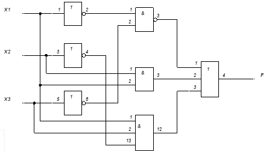
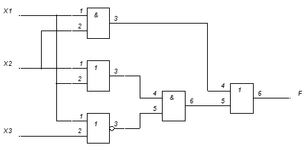

Тема: построение логической схемы по логической формуле и обратно.
Дидактическая цель: закрепить теоретические знания по основам математической логики и выработать практические навыки построения логической схемы по логической формуле и наоборот.
Литература:
- Ф.А. Новиков. Дискретная математика. – С-Пб.: Питер. 2008. 3.1., 4.1.;
- Еловенко Н.А. Дискретная математика. Учебное пособие. – Волгоград. ГОУ СПО ВЭТК. 2008. Главы 2,3.;
Ход занятия:
- Проверка теоретической подготовки студентов (три булевы операции: обозначение в формуле и на схеме, таблицы истинности, три вида представления логической функции).
- Инструктаж преподавателя о ходе выполнения работы.
- Выполнение работы с использованием методических указаний по вариантам.
- Подведение итогов и оценка работы каждого студента.
Порядок выполнения работы:
- Ознакомиться с примером решения.
- Решить задания, соблюдая порядок оформления примера и оформить отчет (номер, тема и цель практической работы, решение задания по варианту, вывод).
- Подготовить ответы на контрольные вопросы (устно), сделать вывод и предъявить отчет преподавателю.
Примеры решения:
1. f = x1 & x3 x1 & x2 & x3 x1 & x2

2. f = x1 & x3 x1 & x2 & x3 x1 & x2

Задание 1: построить схему по логической формуле
1 вариант 2 вариант 3 вариант
f = x1 & x3 x1 & x2 & x3 x3
f = x1 & x3 x1 & x2 x1
f = x1 & x3 x1 & x2 & x3 x3
f = x1 & x3 x2 & x3 x3
f = x1 & x3 x1 & x2 & x3 x3
f = x1 & x3 x1 & x3 x2
Задание 2: записать формулу по логической схеме
1 вариант 2 вариант 3 вариант

Контрольные вопросы:
- Описать обозначение, граф. изображение и таблицу истинности конъюнкции.
- Описать обозначение, граф. изображение и таблицу истинности дизъюнкции.
- Описать обозначение, граф. изображение и таблицу истинности инверсии.
- Что общего и чем отличаются таблицы истинности дизъюнкции и конъюнкции.
- Что общего и чем отличается изображение на схеме дизъюнкции и конъюнкции.
- Что общего и чем отличается изображение на схеме дизъюнкции и инверсии.
- Описать три вида представления логической функции.